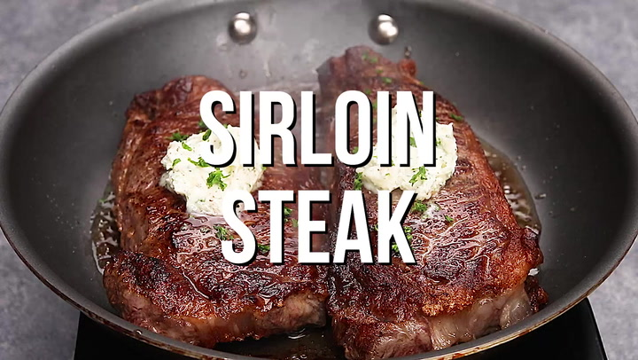

Steak

Description
Tender, flavorful, juicy, and cooked to perfection. This steak recipe will show you how to cooked the perfect medium rare steak.
Ingredients
- 12 oz Sirloin Steak
- Olive Oil
- 1/2 stick of unsalted butter
- Salt and Pepper
- Rose merry
- Parsely
Steps
- Season front and back of the steak with salt and pepper
- Drizzle enough olive oil to cover sauce pan and wait till you start to see a bit of smoke
- Add steak to hot pan and grilled for 5 minutes on each side
- Add in butter and rose merry to the sauce pan. Use a spoon to scoop the melted butter on to the top of the steak
- Take steak out and let it rest for 10-15 minutes before cutting and garnish with parsely